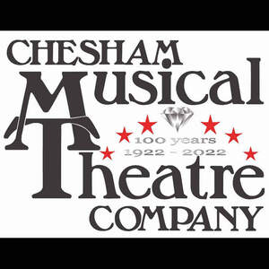
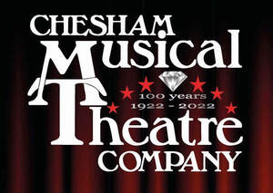

Trade Mark Journal No.2025/052 26 December 2025
UK00004272617 2 October 2025 (41)
Mark 1

Mark 2

- Class 41
- Theatre productions; Theatre entertainment; Theatre performances; Theatre production; Theater productions; Organising of theatre productions; Theater performances; Movie theatre presentations; Theater production; Theatre services; Providing cinema and theatre facilities; Entertainment in the nature of theater productions; Provision of cinema or theatre facilities; Directing of theater productions; Entertainment in the nature of dinner theater productions; Theatre production services; Artistic management of theatre shows; Live musical theater performances; Entertainment by means of theatre productions; Rental of theatre scenery; Movie theater presentations; Providing movie theatre facilities; Movie theatre facilities (Providing -); Cinema theaters; Hire of theatre scenery; Artistic management of theatres; Cinema entertainment; Direction of theatre shows; Theater production services; Rental of lighting apparatus for theatre; Lighting apparatus for theatre (Rental of -); Theatre and concert tickets reservation services; Reservation services for concert and theatre tickets; Theatre booking services; Staging of light entertainment productions; Production of cinema films; Production of television and cinema films; Providing performing arts theater facilities; Reservation services for theatre tickets; Theatrical performances; Provision of theatre facilities; Ticket reservation services (Theatre -); Production of theatrical performances; Theatre ticket agency services; Theatre ticket booking services; Booking agencies for theatre tickets; Rental of lighting for use on theatre sets; Entertainment services by stage production and cabaret; Entertainment services in the form of cinema performances; Organisation of musical entertainment; Preparation of entertainment programmes for the cinema; Cinema presentations; Rental of scenery for use in theatres; Scenery for theatres (Rental of -); Production of pre-recorded cinema films; Entertainment in the nature of ballet performances; Organisation, production and presentation of theatrical performances; Musical entertainment; Organisation of musical concerts; Organisation of musical performances; Performance of dance, music and drama; Production of theatrical shows; Production of music concerts; Organisation of live musical performances; Artistic management of entertainment venues; Artistic management of music venues; Musical concerts by television; Booking agency services for theatre tickets; Entertainment in the nature of orchestra performances; Production of revue shows before live audiences; Booking of seats for shows and booking of theatre tickets; Presentation of live Christmas musical productions; Musical performances; Production of cabarets; Organization, production and presentation of theatrical performances; Entertainment in the nature of dance performances; Cabaret entertainment services; Rental of lighting apparatus for theatrical sets or television studios; Production of stage performances; Theatrical production services; Rental of costumes [theatrical or masquerade]; Theatrical floor shows provided at performance venues; Presentation of theatrical performances; Organisation of music concerts; Lighting productions for entertainment purposes; Directing of theatrical shows; Consultancy on film and music production; Entertainment in the nature of live dance performances; Live musical performances; Production of live entertainment; Live musical concerts; Theatrical shows provided at performance venues; Rental of theatrical scenery; Production of music; Music production; Music performances; Musical concert services; Presentation of musical concerts; Artistic management of musical shows; Entertainment services in the form of concert performances; Entertainment services in the form of musical group performances; Provision of musical entertainment; Production of stage plays; Production of live entertainment events; Entertainment in the nature of live performances by musical bands; Musical entertainment services; Rental of lighting apparatus for movie sets or film studios; Ticket reservation and booking services for theater shows; Providing theater listings; Performance of musical programmes; Production of operas.
Christopher John Smith